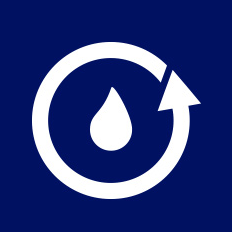

כך זה נראה בטלפון של הטכנאי
פותחים עבודה, מתעדים וחותמים בשטח. ממשיכים לבקרת משרד לפי הצורך, ומשתפים את הדוח עם הלקוח.
לקריאת ההסבר
פותחים את יום העבודה
כאן מתחיל יום העבודה של הטכנאי. המשימות מופיעות בטלפון, עם האתר וסוג העבודה. פותחים את העבודה הבאה ומתחילים לתעד בשטח.
הפרטים כבר מוכנים
פרטי הלקוח והמאגר כבר נמצאים בטופס. מעדכנים רק מה שהשתנה. בדוגמה אפשר ללחוץ על מילוי נתוני תרגול, כדי להתנסות בלי להקליד הכול.
מסמנים תוך כדי עבודה
בתיעוד הביצוע מסמנים את הפעולות שבוצעו, ומוסיפים את פרטי החיטוי. כך המידע נכנס לדוח כבר בזמן העבודה, ולא צריך לשחזר אותו בסוף היום.
מצרפים תיעוד מהשטח
מתעדים את הזמנים ואת פרטי הביצוע, ומצרפים תמונה מהטלפון. צילום של המתקן או של ליקוי נשמר יחד עם העבודה ועם הדוח.
ממלאים מדידות ודיגום
מזינים את מדידות השטח ואת פרטי הדגימה: מזהה, נקודת דיגום ושעה. תוצאת המעבדה תצורף בנפרד בהמשך. כל הערכים שמוצגים כאן הם לתרגול בלבד.
מסכמים וחותמים
בסיכום רואים אם חסר משהו, משלימים את שם המבצע וחותמים באצבע. מכאן אפשר לצפות בדוח שנבנה מהנתונים, ולהעביר אותו לבקרת המשרד.
הדוח כבר נבנה
זה הדוח שנוצר מהטופס: פרטי האתר, פעולות הביצוע והמדידות. התיעוד והחתימה מצורפים אליו. הטכנאי והמשרד לא צריכים להקליד את אותו מידע מחדש.
בקרה לפי התהליך שלכם
אם אצלכם נדרשת בקרת משרד, כאן עוברים על הנתונים. אפשר להחזיר לטכנאי הערה להשלמה. את מסלול האישור מתאימים לאופן שבו אתם עובדים.
משלימים ומאשרים
בתרחיש המאגר שבדוגמה משלימים גם תוצאת מעבדה ואסמכתא. לאחר הבקרה מאשרים את הדוח, והוא מוכן לשיתוף עם הלקוח.
שולחים ישר מהטלפון
וכן, אפשר לשתף ישירות מהטלפון. לוחצים על שליחת הדוח ללקוח ובוחרים וואטסאפ או אימייל. בוחרים את הנמען ושולחים את קובץ הפי די אף. בדוגמה אין שליחה אוטומטית.
גם הביקור הבא מסודר
בתיק הלקוח נשמרים פרטי המתקן והדוח, ואפשר לקבוע מועד למעקב. כך בביקור הבא מתחילים מהמידע שכבר קיים.
פחות כתיבה. יותר עבודה.
זו דוגמה לתהליך מלא: פחות כתיבת דוחות לטכנאי, פחות השלמות במשרד, ויותר זמן לעבודה. עכשיו אפשר לפתוח את הדוגמה ולהתנסות בעצמכם.